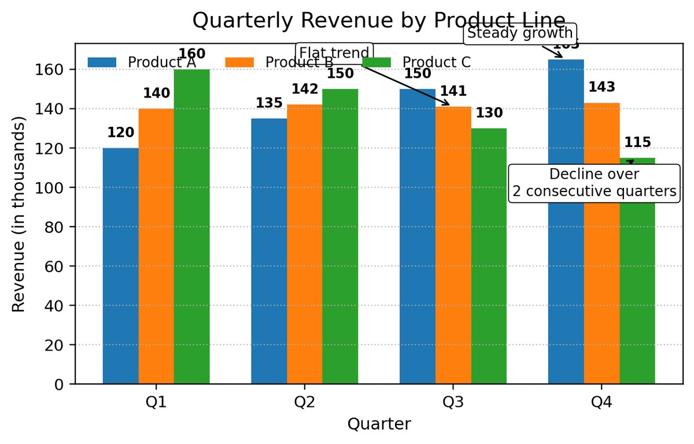
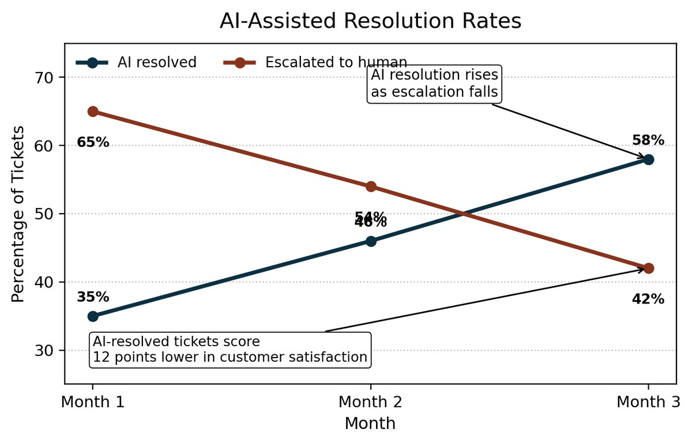
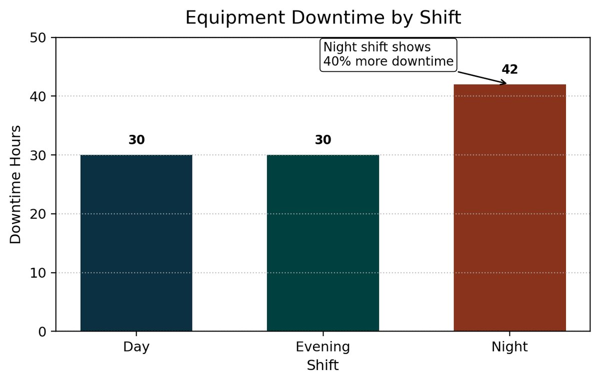
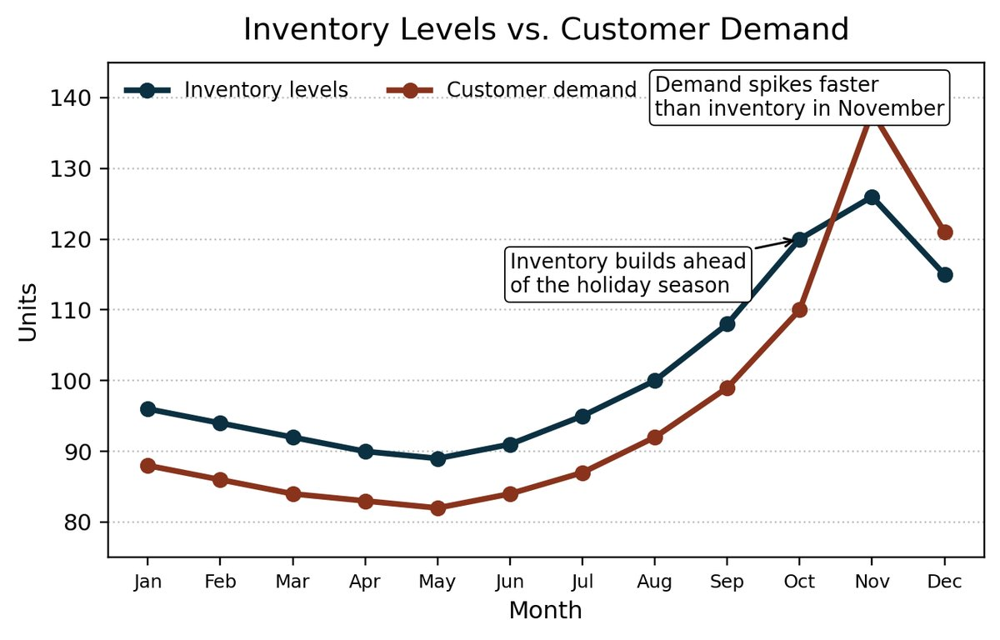
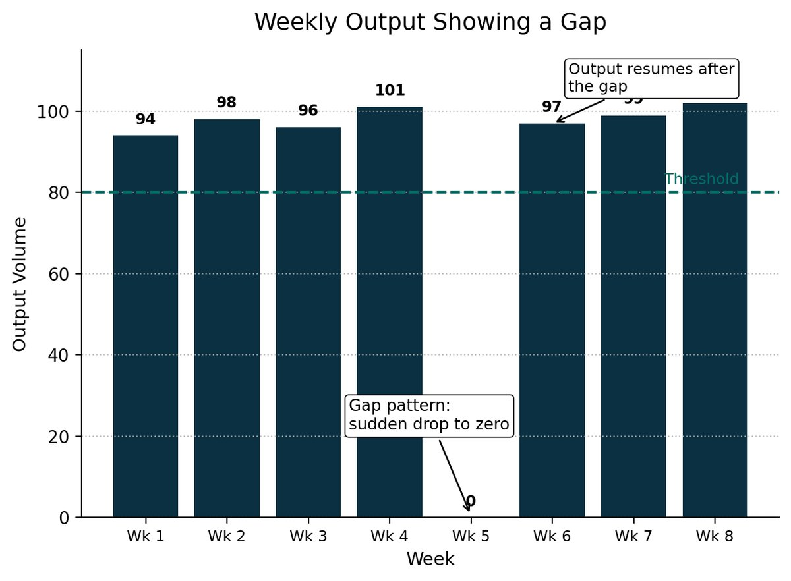
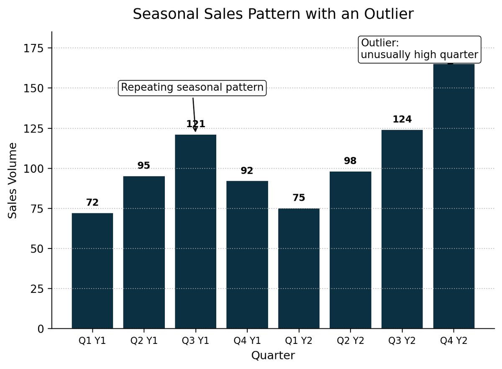
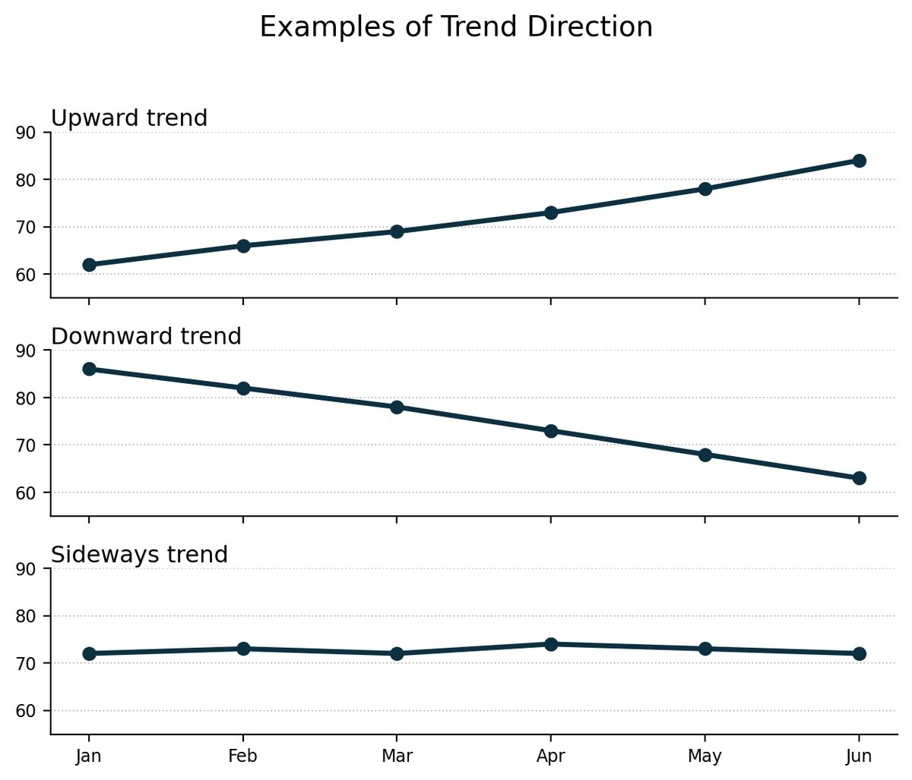
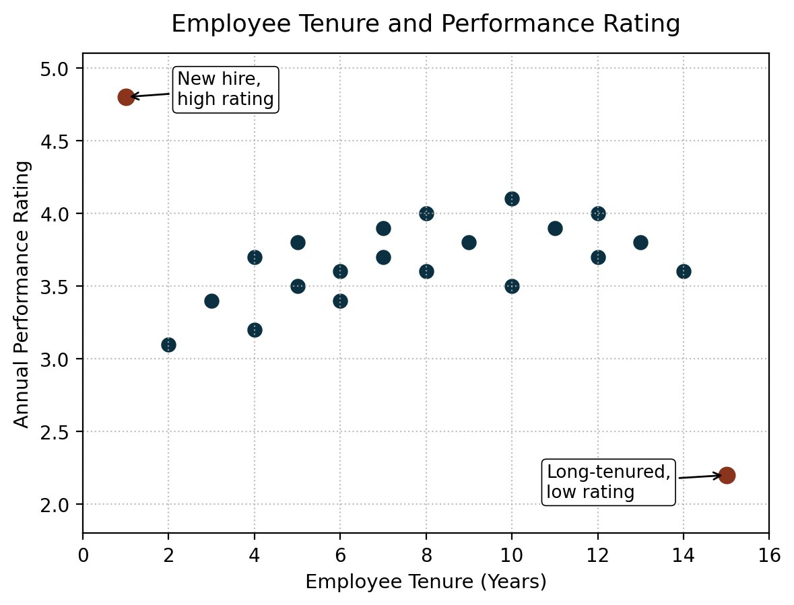
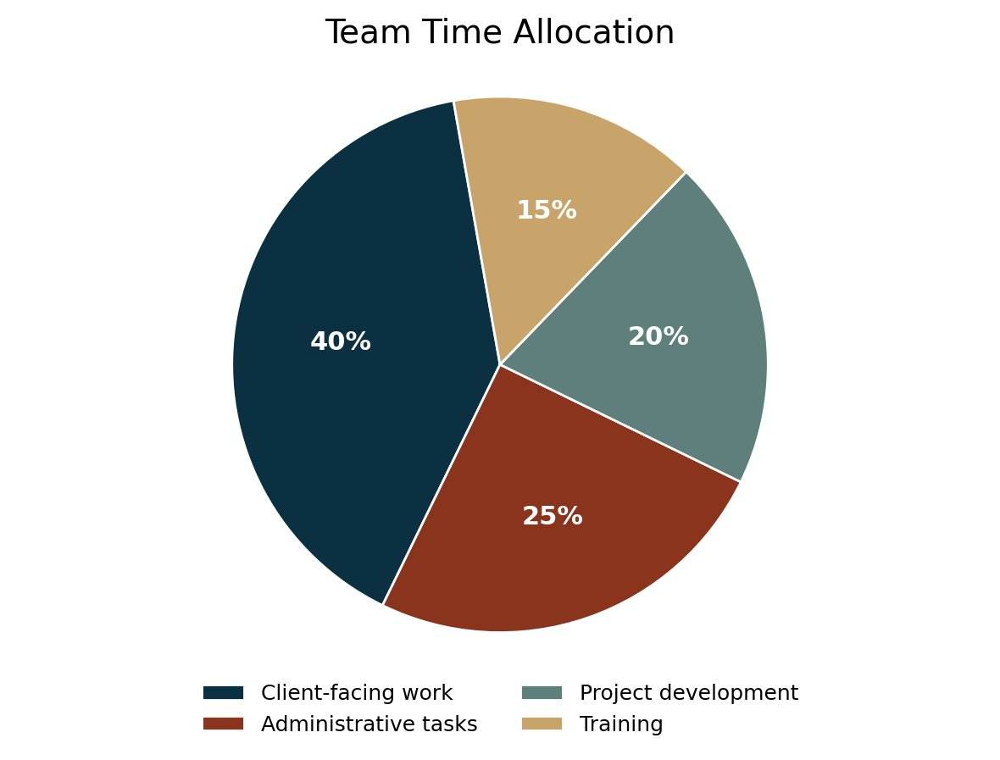

Work / Data Literacy for Individual Contributors
Data Literacy for Individual Contributors
Scenario-based activities that teach people to read a chart before they act on it.
Individual contributors see dashboards every day and are expected to draw conclusions from them. Most have never been taught how. The client needed a data literacy program that fit inside its existing learning series and matched its brand.
I designed a set of concept slides (trends, gaps, cyclical and outlier patterns, scatter plots, pie charts) and a series of scenario-based activities. Each activity gives the learner a chart with a realistic business situation (a dip in customer satisfaction, equipment downtime by shift, AI chatbot resolution rates) and a sequence of questions that walks them from observation to inference to a recommendation.
Every chart was generated in code so the data told the story I needed it to and the palette stayed consistent across the series. For the same client I also designed the Transformational Leadership session and the Critical Thinking for Managers learning plan, which I adapted for three more audiences. That work is under NDA, so it is described here and not shown. A trainer who delivered Transformational Leadership called it the best experience she has had as a trainer.
- Type
- Instructor-led and self-paced training design
- Client
- Bundle, through The Learning Loop
- Date
- 2026
- Tools
- PowerPoint
- Python (matplotlib) for the charts
- Skills
- Scenario design
- Data visualization
- Question sequencing
- Brand-consistent slide design
- Audience adaptation
The design process
The need
Learners could describe a chart but not act on it. The gap was the step from "the line goes down" to "here is what I would do next."
What I delivered
Concept slides that teach one pattern each, and activity slides that put the learner in a situation and ask for a decision. Both sets follow the client's template so a facilitator can drop them into any session.
Development
Charts built in matplotlib with a fixed palette and annotation style, placed into the client's slide template, with the question sequence written to move from what the chart shows to what the learner should do.
The finished project

Activity: a dip in customer feedback. What happened in April, and what would you check first? 
Activity: three product lines, three different stories. Where would you focus the team? 
Activity: AI resolution rises while escalations fall. What is the satisfaction score telling you? 
Activity: night shift shows 40% more downtime. What questions come before a conclusion? 
Activity: demand spikes faster than inventory. When should ordering change? 
Concept: a gap pattern, a sudden drop to zero. 
Concept: a repeating seasonal pattern with one outlier. 
Concept: upward, downward, and sideways trends. 
Concept: a scatter plot with two outliers worth asking about. 
Concept: parts of a whole.